BBoyz · Responsive redesign · Look only
BBoyz already has good desktop bones — a worded left rail that looks like Mercury's. Everything to the right of that rail is still a phone: one column, 820px wide, with 122px of dead space on each side, and the day's one job sitting 82% of the way down the page. This sheet shows the gap at 390 / 768 / 1280 with measurements, and an After that keeps blue+gold Precision and the phone's bottom tabs exactly as they are.
7f03abb, measuredBoth columns below are the same page rendered by the same CSS. The Before is the shipped build; the After is one markup at all three widths. Every number is read out of the live layout, not estimated.
| At 1280 | Before | After |
|---|---|---|
| Content column | 820px | 1064px |
| Dead gutter each side | 122px | 0px |
| Post-rail width unused | 23% | 0% |
| Content columns | 1 — eight full-width bands | 2 — job left, context right |
| Day's primary CTA sits | 82% down the page (y=1509 of 1839) | 23% down (y=231) |
| At 768 | ||
| Layout | 64px icon rail + 704px single column | Two columns |
| At 390 | ||
| Bottom tab bar | 5 tabs, fixed — correct | Unchanged. Kept. |
| Primary CTA sits | Below the fold, after kcal / macros / log / tiles | 15% down — first thing on the screen |
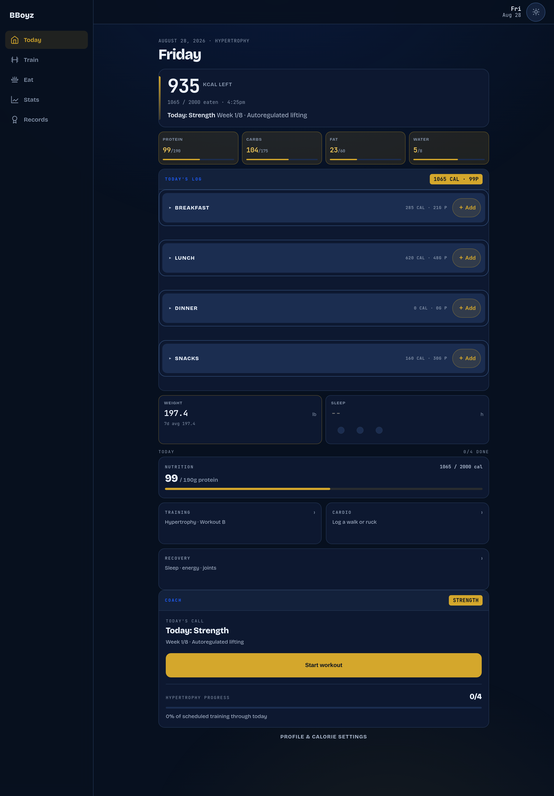
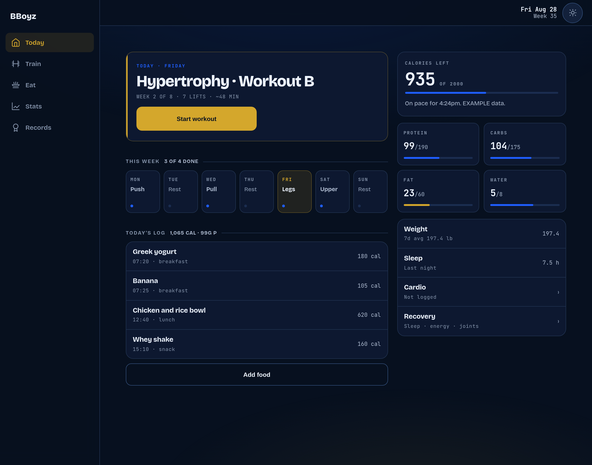
The bones are Mercury's — worded rail, then a card grid that actually spans the space — and the week strip is Sunsama's day board narrowed to one row. Nothing new was invented for the palette: 15 distinct computed colours on the After page, all resolved from existing styles.css tokens.
Gold still means one thing. One filled gold control on the screen (Start workout), one gold-tinted state (today in the week strip), and one gold bar — Fat, the only macro behind the elapsed day. Everything on pace is blue or grey, so the screen is still scannable by colour.
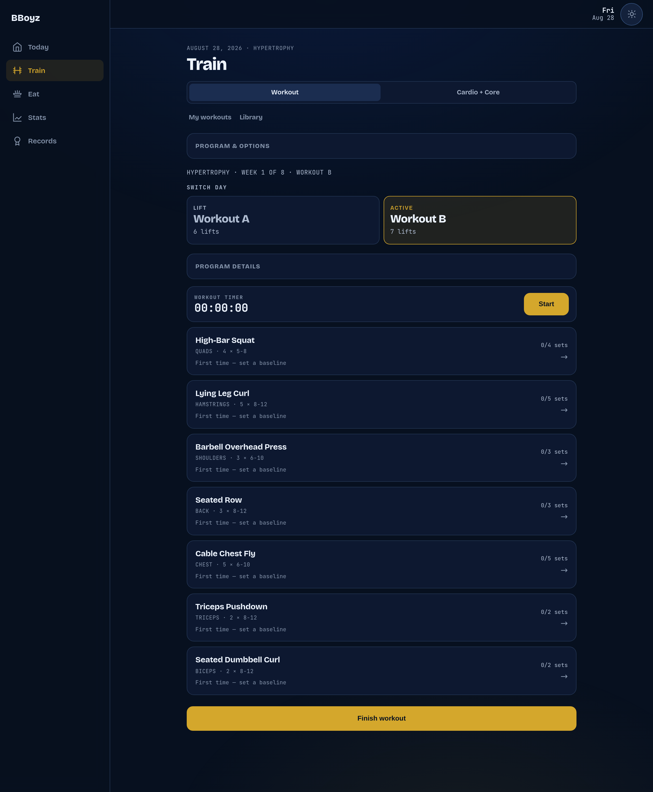
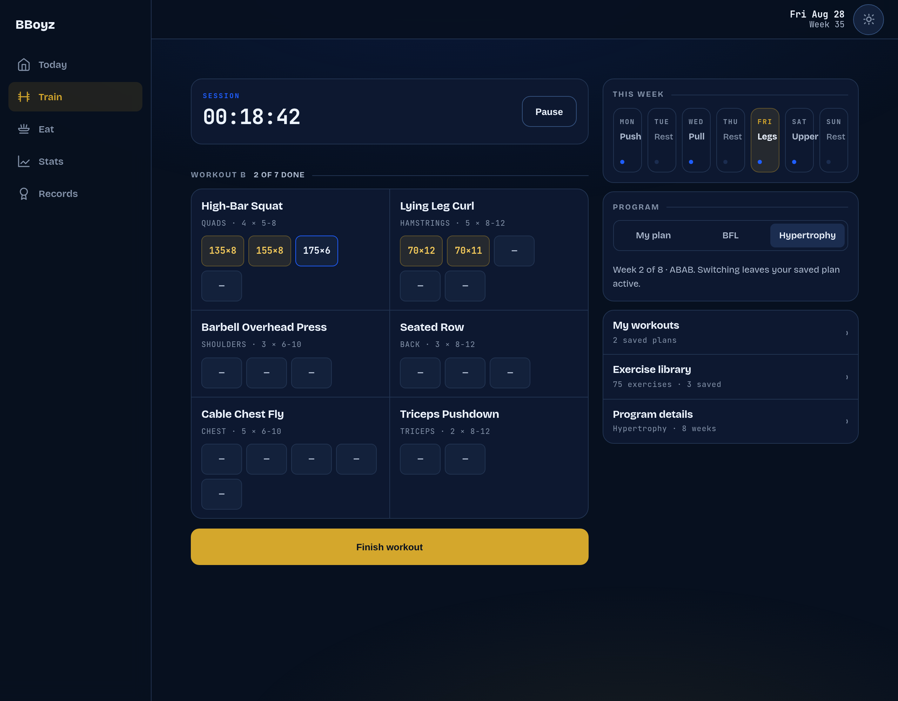
The split is the point: Program & options and My workouts stop being obstacles between the user and the session, and become a rail beside it. The set chips are Train Fitness's density — logged sets, the next set, and the empties — in BBoyz's own face, no purple AI chrome.
The program control keeps what shipped last week: My plan | BFL | Hypertrophy in one seg, so the Menno 8-week ABAB stays one tap away.
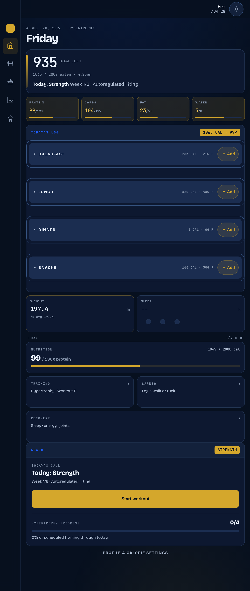
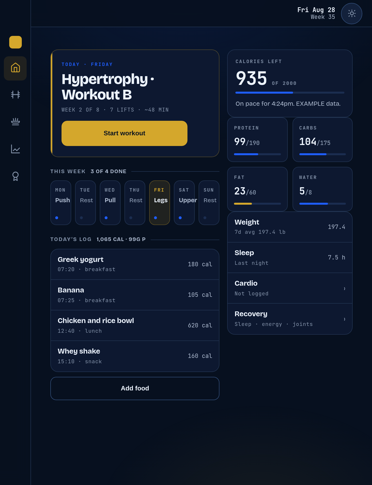
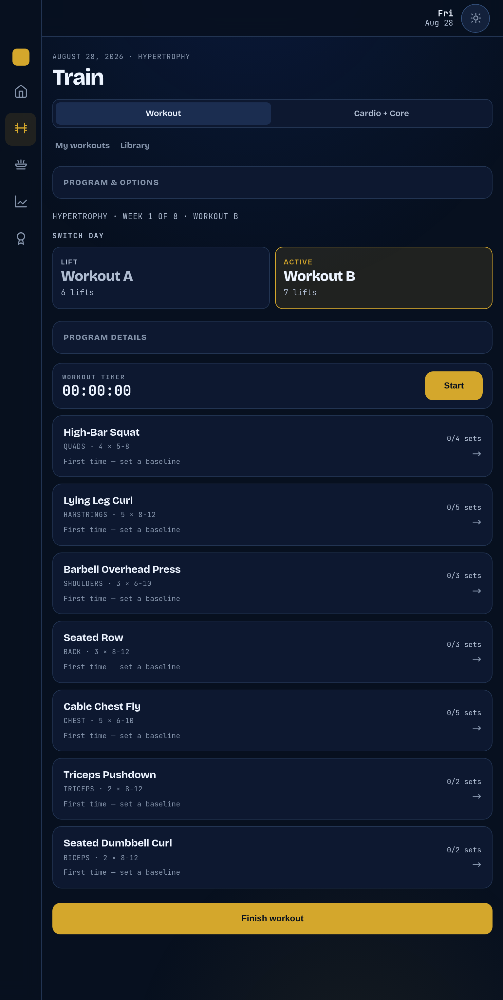
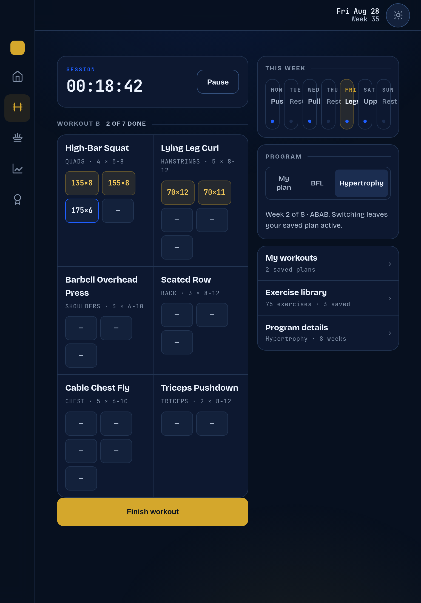
One thing caught while measuring. The first pass put four macro tiles across the tablet's right column. At 768 that column is ~510px, so each tile was ~120px and 104/175 rendered as 104/17 — a different number, with no ellipsis to warn you. Two across at 768. This is the same silent-truncation class as the four-character food name in the compact entry row.
The phone is not the problem, and the After changes as little as possible there. Bottom tab bar stays — five tabs, fixed, gold active state. No sidebar, no drawer, no hamburger. What changes is the order: the day's one job moves to the top of the screen instead of the bottom of the scroll.
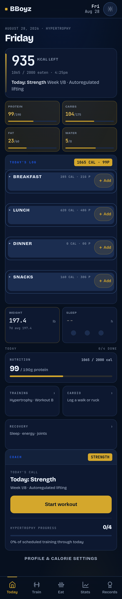
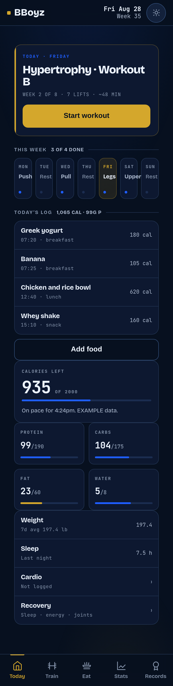
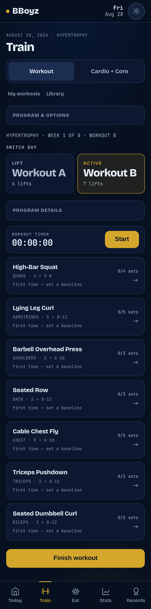
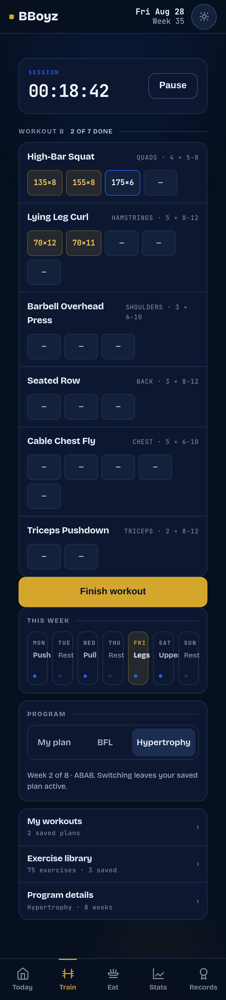
Light is a required mode, so the After was checked in it rather than assumed. The layout is token-driven, so the theme carries it with no extra work.
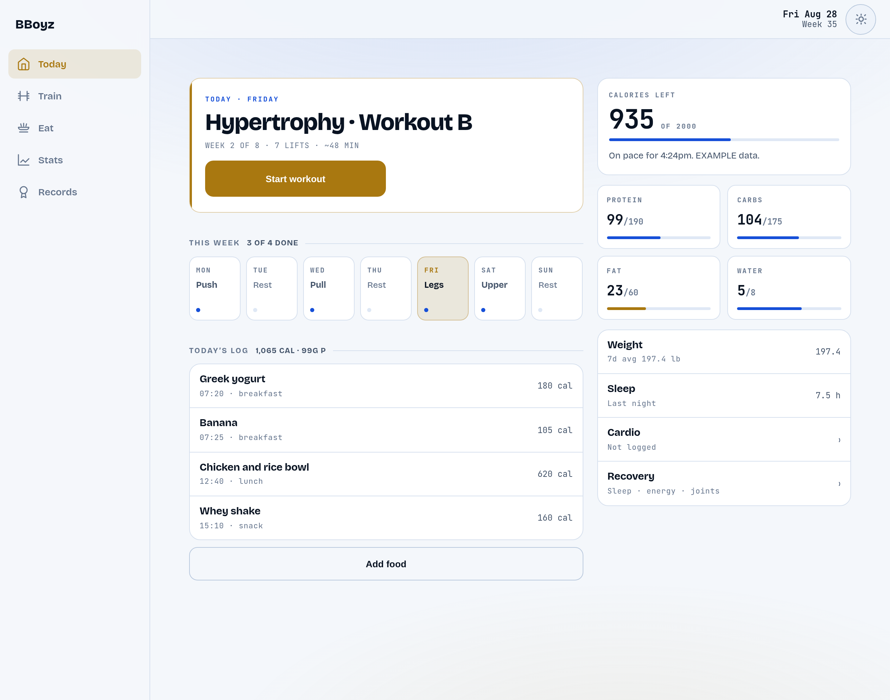
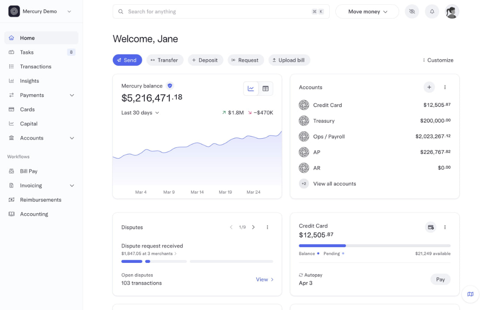
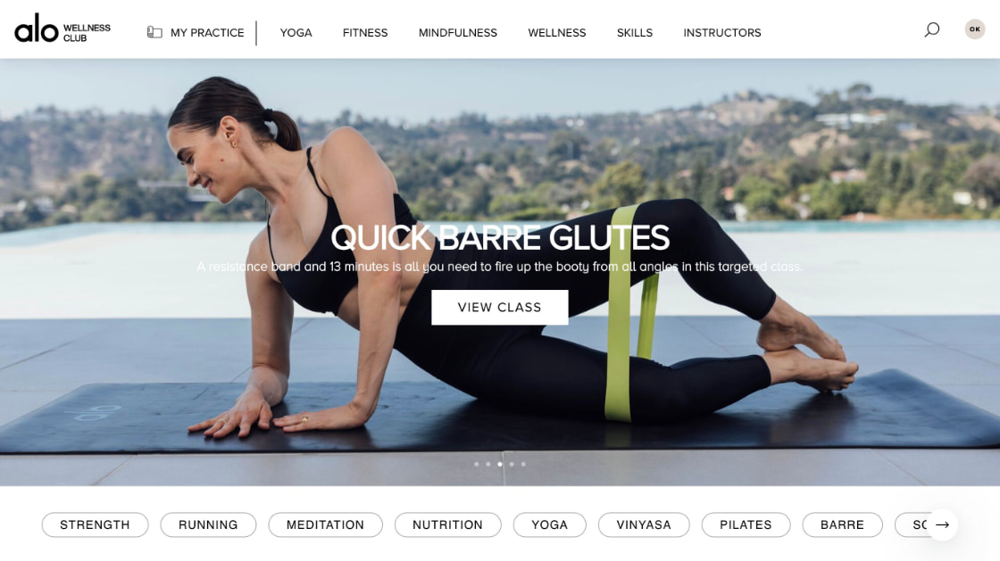
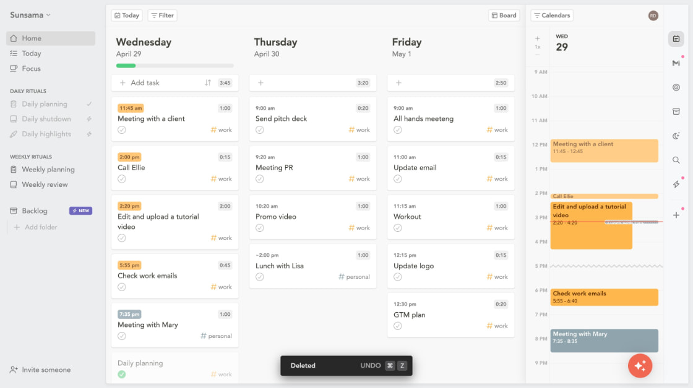
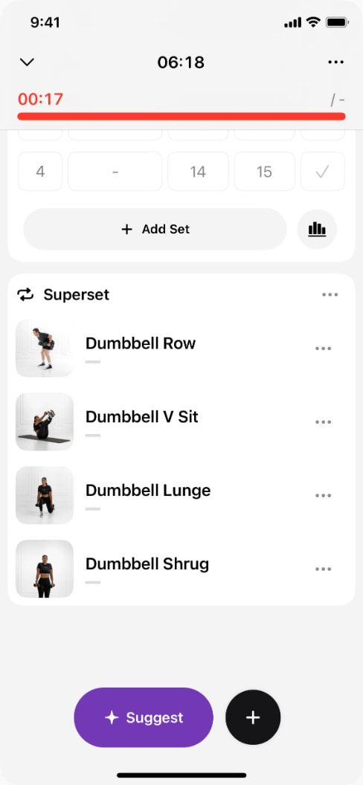
Befores are the shipped app, not a drawing: prod 7f03abb (which includes the workout builder merged earlier today), served locally and rendered by headless Chrome at 390, 768 and 1280 at 2× — so the real CSS breakpoints apply. The measurements are read out of that live layout.
Signing in needs Paul's password, which Claude cannot type, so the Befores were produced by seeding EXAMPLE meal and weight values into the app's own render path on a throwaway local profile. No account was signed into and none of Paul's data was read or written. The layout being measured is chrome and width, which is unaffected by whose numbers are in it.
Afters are one HTML file per surface, linking the app's real styles.css plus a single redesign.css of rd- classes, shot at the same three widths. Same markup at every width — the grid is the only thing that changes.
Look-yes or look-no via Prometheus. The whole After is layout: a wider content column at 1024+, a two-track grid inside it, and reordering Today so the session leads. It touches no data path, no storage, and no program logic. Nothing is built, merged or deployed until Paul says.